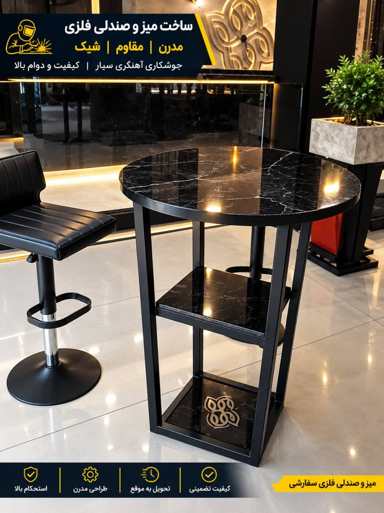
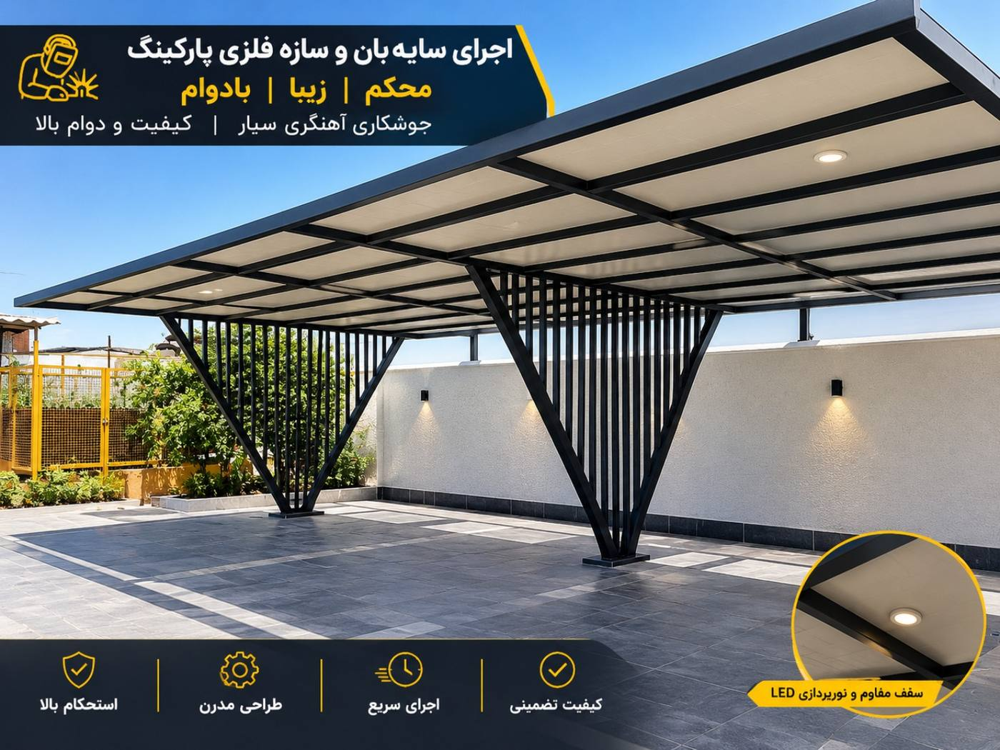
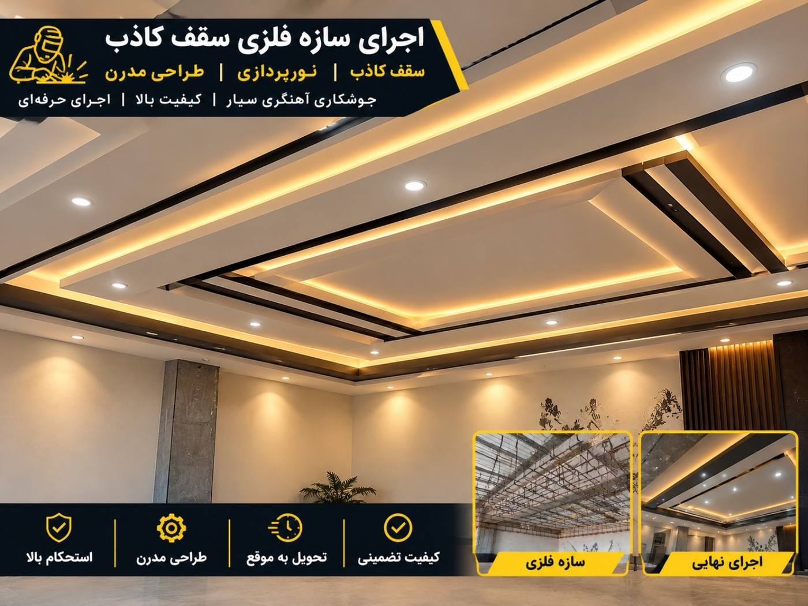
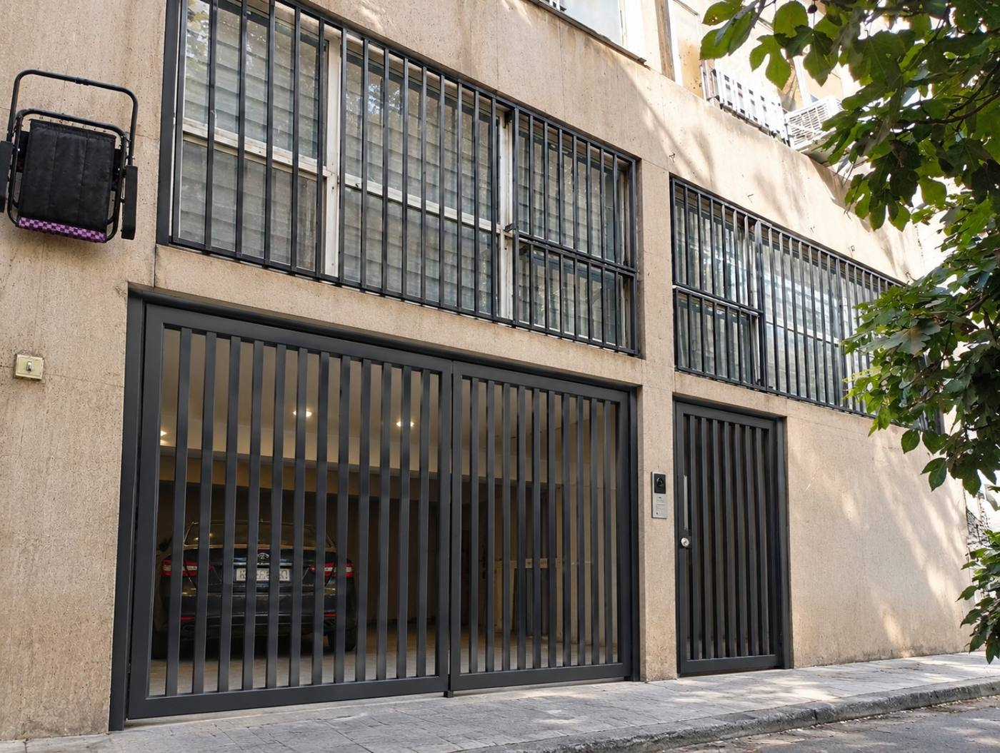
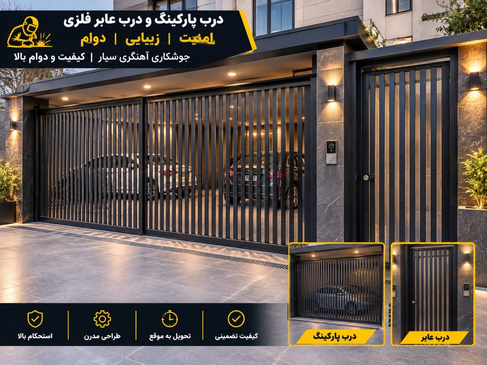
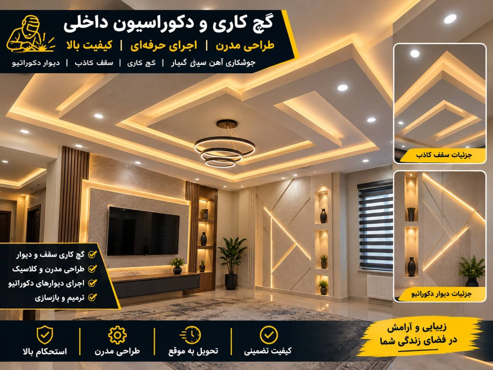
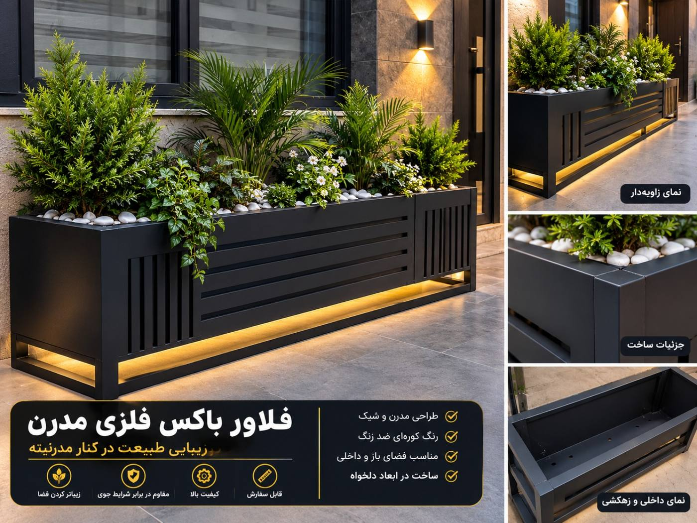
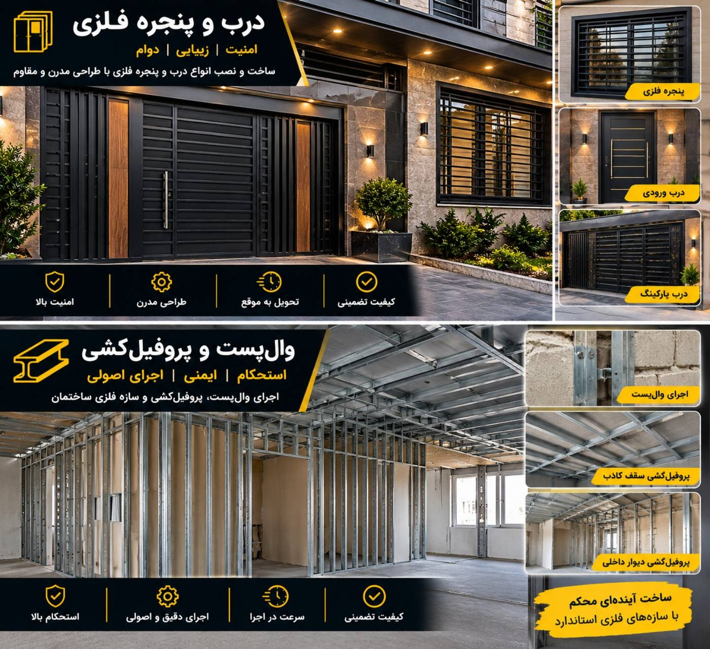
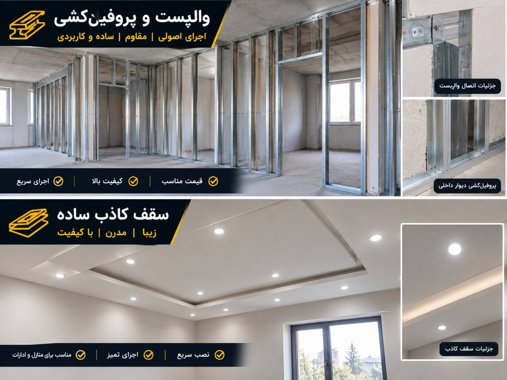
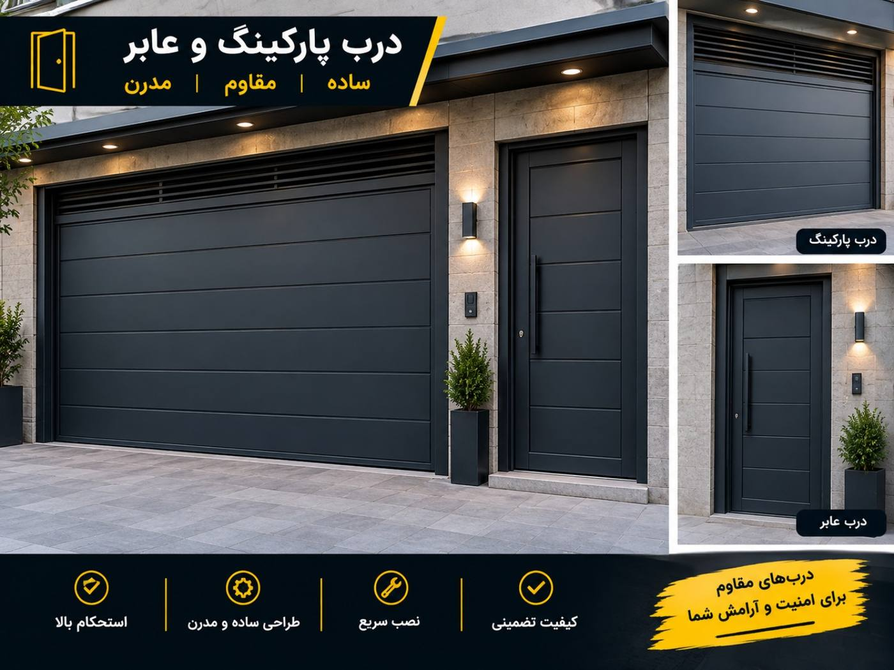

جوشکاری و آهنگری در محل مشتری
جوشکار آهنگر سیار تهران
ساخت، نصب و تعمیر انواع سازههای فلزی در تهران، کرج، ری و حومه.
برای هماهنگی کار و دریافت قیمت، مستقیم تماس بگیرید.
خدمات جوشکاری و آهنگری سیار
جوشکاری سیار در محل
جوشکاری و تعمیرات فلزی در منزل، ساختمان و محل پروژه.
درب و پنجره آهنی
ساخت، نصب و تعمیر انواع درب و پنجره فلزی.
نرده و حفاظ دیوار
ساخت حفاظ دیوار، حفاظ پنجره و نرده راهپله.
والپست و پروفیلکشی
اجرای کارهای فلزی ساختمانی و نصب والپست.
فلاشینگ و بام
ساخت و نصب فلاشینگ و اتصالات فلزی ساختمان.
تعمیرات فلزی
تعمیر چهارچوب، اتصالات و سازههای فلزی.
نمونهکارهای جوشکاری و آهنگری
چند نمونه از کارهای فلزی و آهنگری؛ برای هماهنگی اجرای پروژه تماس بگیرید.

نمونهکار جوشکاری

سازه فلزی

درب و نرده فلزی

حفاظ فلزی

آهنگری و ساخت فلز

ساخت سفارشی

کارهای فلزی

جوشکاری در محل

ساخت و نصب

نمونهکار آهنگری
جوشکار سیار در محل
برای جوشکاری، آهنگری، ساخت حفاظ و تعمیر سازههای فلزی لازم نیست به کارگاه مراجعه کنید.
نوع کار و محل پروژه را توضیح دهید. در صورت امکان عکس کار را از طریق واتساپ بفرستید تا هماهنگی دقیقتری انجام شود.
مناطق ارائه خدمات
تهران: اولویت اصلی خدمات در تهران و مناطق اطراف است.
کرج و ری: انجام کار با هماهنگی قبلی.
سایر مناطق: برای پروژههای دیگر مناطق نیز تماس بگیرید تا امکان انجام کار بررسی شود.
تماس با جوشکار آهنگر سیار
برای هماهنگی جوشکاری، آهنگری، ساخت حفاظ و تعمیرات فلزی تماس بگیرید.
ایمیل: Zhihadnavazi@gmail.com